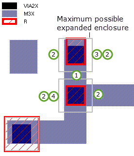
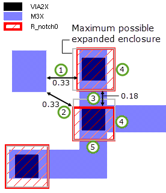
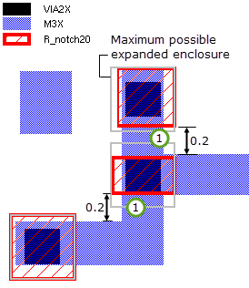

Layer operation
License: Calibre YieldEnhancer
Generates expanded enclosure regions for vias. Specifically, the operation creates a new derived polygon layer containing the regions representing these expanded enclosures. The operation preserves node numbers on the via layer.
DFM EXPAND ENCLOSURE via_layer conn_layer
{LINEENDMAX enclosure_dist | SIDEMAX enclosure_dist}
SIDE side_expansion
LINE line_expansion
END end_expansion
[LIMITSIDES]
SPACE min_space [NOTCH min_notch]
STEP step_size
[MAINTAIN SPACING]
[SPACING space space_layer [PERPENDICULAR ALSO]] …
Arguments should be specified in the order shown in the usage line.
A required original or derived polygon layer. This is a via layer.
A required original or derived polygon layer. This is a connectivity layer.
A required keyword set that defines the distance in microns used to classify via edges as a line, side, or end.
An edge is a line if the enclosure >= enclosure_dist
An edge is a side if the enclosure < enclosure_dist and the edge is not classified as an end.
An edge is an end if the enclosure < enclosure_dist and both adjacent edges are sides and the opposite edge is a line.
See “Edge Classification”.
The behavior of SIDEMAX and LINEENDMAX are identical except in cases where vias are enclosed by different distances. In these cases, the behavior differs as follows:
LINEENDMAX uses the maximum enclosure distance for a via edge to compare with the enclosure_dist value for classifying edges as a line, side, or end. This means that if any part of the enclosure for a via edge is >= enclosure_dist, then the edge is classified as a line.
SIDEMAX uses the minimum enclosure distance for a via edge to compare with the enclosure_dist value for classifying edges as a line, side, or end. This means that if any part of the enclosure for a via edge is < enclosure_dist, then the edge is classified as a side or end.
Refer to the following figure.
A required keyword set specifying the expansion distance in microns to be applied to edges classified as sides. The specified expansion must meet the design rules. An edge is classified as a side if the enclosure is < enclosure_dist, and it is not classified as an end.
A required keyword set specifying the expansion distance in microns to be applied to edges classified as lines. The specified expansion must meet the design rules. An edge is classified as a line if the enclosure is >= enclosure_dist.
A required keyword set specifying the expansion distance in microns to be applied to edges classified as ends. The specified expansion must meet the design rules. An edge is classified as an end if the enclosure is < enclosure_dist, and both adjacent edges are sides and the opposite edge is a line.
An optional keyword that limits the side expansion of the via enclosure to the side edge of the connectivity layer. Line and line‑end expansions are not affected. When using this keyword, only the vias that have end edges are considered; all other vias are ignored. This corresponds to Case 1 in Figure 5.
A required keyword that specifies the minimum allowed spacing, where min_space is a positive distance in microns. These spacing measurements are made:
enclosure to enclosure — Measures spacing between edges of the expanded via enclosures, using a single-layer External operation.
enclosure to conn_layer edge — Measures spacing between the expanded via enclosures and edges on the connectivity layer (conn_layer), using a two-layer External operation with the MEASURE ALL keyword.
The spacing measurement is affected by the NOTCH keyword.
Connectivity — The application of the spacing rule depends on whether connectivity is present for via_layer and conn_layer.
With connectivity — By default, the spacing check is performed as External NOT CONNECTED. This means spacing is enforced only between edges on different nets and not between edges on the same net. This can be changed with the MAINTAIN SPACING keyword.
Without connectivity — The spacing check is performed between all edges.
An optional keyword set that affects how the spacing rule is applied, where min_notch is a non-negative distance in microns. If specified, NOTCH must follow the SPACE keyword set.
When NOTCH is specified, the operation distinguishes between edges associated with the same or different connectivity layer shapes.
Measurement |
Same shape measurement |
Different shape measurements |
|---|---|---|
enclosure to enclosure |
Enclosures are located on the same polygon on conn_layer. |
Enclosures are located on different polygons on conn_layer. |
enclosure to conn_layer edge |
The enclosure is located on the same conn_layer polygon as the conn_layer edge being considered. |
The enclosure is located on a different conn_layer shape than the conn_layer edge being considered. |
Using the definition of same shape measurements and different shape measurements in the preceding table, the NOTCH keyword behaves as follows:
NOTCH 0 — Only the different shape measurements are performed. The measurements are performed as an EXTERNAL operation with a min_space constraint, but only between edges that are associated with different connectivity layer shapes.
NOTCH min_notch — The same shape measurements are performed with a constraint of min_notch for the EXTERNAL operation. The different shape measurements are performed with a constraint of min_space in the External operation.
The measurements are illustrated in the following figure. Also see the Examples.
A required keyword set specifying the enclosure increment in microns. The step_size is a floating point number that is the smallest distance by which an enclosure region can extend beyond the via it encloses. In situations where the expansion cannot be satisfied, the operation attempts to find the greatest expansion that meets the design rules and is an integer multiple of the step_size.
An optional keyword that indicates spacing is enforced between all edges, including those on the same net.
If connectivity is present on the input layers, then by default the expansion checking specified with the SPACE keyword is performed as External NOT CONNECTED. The keyword MAINTAIN SPACING changes this behavior, so that checking is performed between all edges.
Figure 3 shows the effect of using MAINTAIN SPACING when connectivity exists on the input layers.
Case 1 — Without MAINTAIN SPACING, the R1 end enclosure expansion violates edge-to-edge spacing constraints in the same net.
Case 2 — With MAINTAIN SPACING, the R1 end enclosure expansion does not violate edge-to-edge spacing constraints in the same net.
For both cases, NET_2 and NET_1 are two distinct nets.
An optional keyword set specifying additional spacing constraints placed on the via enclosure regions. More than one of these constructs can be specified. The keywords are specified by ordered position and are defined as follows:
space — Defines the minimum spacing in microns between an expanding enclosure and features on space_layer.
space_layer — Defines the layer against which the spacing is measured. The layer can be any polygon or edge layer.
PERPENDICULAR ALSO — If specified, checks the perpendicular spacing of the edges of the space_layer to the via enclosure expansion edges classified as side, end, or line.
This operation generates expanded enclosure regions of specific configurations for orthogonal via edges. It classifies each of the via edges as a side, line, or end, then expands those edges by the expansion distance specified for that class of edge. This operation does not operate on 45‑degree or skew edges.
If the full expansion would result in a spacing violation, it expands by a smaller distance that does not create a violation. The spacing rule is defined by the SPACE keyword, which is applied differently depending on whether connectivity is present on the input layers. The MAINTAIN SPACING keyword affects the spacing rule. See the keyword definitions for details.
If connectivity exists on via_layer and conn_layer, the output layer inherits the connectivity of via_layer.
DFM Expand Enclosure covers six specific orthogonal configurations, shown in the following figure with side, line, and end displacement marked as DS, DL and DE, respectively.
Edge classification is based on two factors:
The size of the original via enclosure, that is, the distance by which the connectivity layer extends beyond the via determines if an edge is a line. The operation compares the enclosure size to the enclosure_dist value. If the enclosure is >= enclosure_dist, the edge is a line. Otherwise the edge is a side or an end.
The classification of the adjacent and opposite edge(s) determines if an edge is an end or a side. If the enclosure is < enclosure_dist, and both adjacent edges are sides and the opposite edge is a line, then the edge is an end. In all other cases where the enclosure is < enclosure_dist, the edge is a side.
If the enclosure is not uniform across the via edge, the LINEENDMAX and SIDEMAX keywords determine which enclosure distance to use for edge classification. If LINEENDMAX is specified, the maximum enclosure distance is used. If SIDEMAX is specified, the minimum enclosure distance is used. See Figure 1.
Once the edges have been classified, the operation generates the enclosure region by extending each via edge by the expansion distance specified for the edge type:
SIDE — side_expansion
LINE — line_expansion
END — end_expansion
The operation only generates expanded enclosures for orthogonal edges and does not operate on 45‑degree or skew edges.
Expansions must conform to the spacing rules defined for the operation. At least one rule defined by the SPACE keyword always applies.
You can define as many additional spacing rules as needed using the optional SPACING keyword. Each one defines the minimum spacing between an enclosure and the features on the specified polygon or edge layer. Typically, spacing layers are subsets of the connectivity layer, for example, orthogonal metal edges may have one spacing while non-orthogonal metal edges may have a different or larger spacing.
In situations where an expansion cannot be satisfied without violating a spacing rule, the operation expands by a smaller distance that does not create a violation. The operation attempts to find the greatest expansion that meets the design rules and is an integer multiple of the STEP value.
Examples 1, 2, and 3 use the layout in the following figure. The maximum possible expanded enclosure (without considering spacing constraints) is shown in the right-side image. The measurements displayed in the following figure help in understanding the results of the examples. The letters label locations that are referred to in the example discussions.
The following operation uses only required settings.
LAYER VIA2X 32
LAYER M3X 34
R{
DFM EXPAND ENCLOSURE VIA2X M3X
LINEENDMAX 0.1
SIDE 0.1
LINE 0.1
END 0.1
SPACE 0.33
STEP 0.005
}Full expansion of the via enclosure is not possible in some locations due to spacing violations.
 |
The explanations refer to layout locations A, B, and C in Figure 6. 1 — The via separation (0.28, location A) already violates the enclosure to enclosure spacing rule, so no expansion up or down is possible. 2 — Expansion to the left and right would extend the enclosure to enclosure spacing violation. 3 — Expansion to the right would cause an enclosure to conn_layer spacing violation (location C). 4 — Expansion to the left would cause an enclosure to conn_layer spacing violation (location B). |
This example uses NOTCH 0 to permit more expansion than allowed in Example 1. These two types of spacing violations are not checked:
Between expanded enclosures belonging to the same connectivity layer shape
Between expanded enclosures and connectivity layer edges belonging to the same connectivity layer shape.
LAYER VIA2X 32
LAYER M3X 34
R_notch0 {
DFM EXPAND ENCLOSURE VIA2X M3X
LINEENDMAX 0.1
SIDE 0.1
LINE 0.1
END 0.1
NOTCH 0
SPACE 0.33
STEP 0.005
} |
1 — The enclosure expands to the left until it meets the spacing constraint to the different conn_layer shape. 2 — The enclosure meets the spacing constraint to the different conn_layer shape. 3 — Enclosure to enclosure distance on the same conn_layer shape is not measured with NOTCH 0. 4 — Expansion to the right is possible because enclosure to enclosure spacing and enclosure to conn_layer edge for edges belonging to same conn_layer shape is not measured. 5 — Expansion down is possible because spacing between an enclosure and conn_layer edge belonging to same conn_layer shape is not measured. |
This example uses the NOTCH keyword with a spacing constraint of 0.2. The SPACE constraint is 0.33.
LAYER VIA2X 32
LAYER M3X 34
R_notch20 {
DFM EXPAND ENCLOSURE VIA2X M3X
LINEENDMAX 0.1
SIDE 0.1
LINE 0.1
END 0.1
SPACE 0.33
NOTCH 0.2
STEP 0.005
}These spacing measurements are made, where M3X is the conn_layer:
For expanded enclosures (ee) and M3X edges that belong to the same M3X shape:
EXTERNAL ee < 0.2 // NOTCH spacing
EXTERNAL ee M3X < 0.2 MEASURE ALLFor expanded enclosures (ee) and M3X edges that belong to different M3X shapes:
EXTERNAL ee < 0.33 // SPACE spacing
EXTERNAL ee M3X < 0.33 MEASURE ALL
 |
The differences between Example 2 and this example are noted: 1 — The downward expansion of the both enclosures is limited by the min_notch spacing of 0.2 between enclosure shapes and connectivity layer edges that belong to the same connectivity layer shape. |